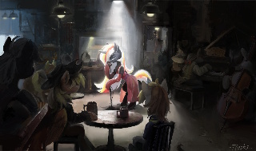
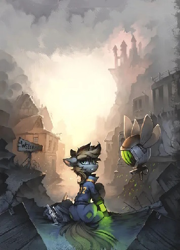
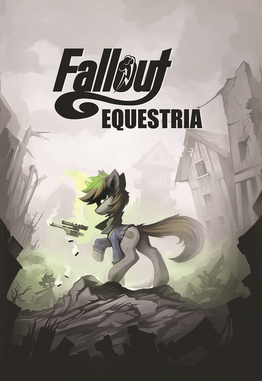
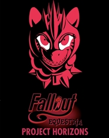
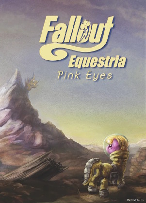
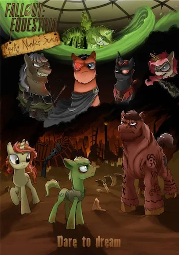
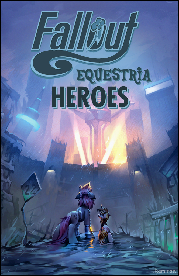

Fallout Equestria é uma fanfic a qual mistura ambos os mundos do jogo Fallout, com o mundo do desenho My Little Pony, nomeadamente Equestria.
Sendo considerada a fanfic mais popular e de certa forma, influenciavel de ambas franquias, ao ponto de
ter sido aceite pela Biblioteca do Congresso, a maior biblioteca do mundo; (fonte).
Isto mostra o grande impacto e relevancia da Fanfic, transcendendo espaços online, devido a sua surprendente qualidade literaria.
A história foi escrita pela escritora Kkat em 2011, quando a primeira temporada da quarta geração de
My Little Pony (Friendship is Magic) estava sendo produzida, contendo um total de 620296 palavras,
a qual leva à um total de ~2000 páginas, sendo apenas 100 mil palavras a menos que a bíblia. Mesmo com o grande contraste de fránquias,
com o mundo radioativo, violento, triste e estranho de Fallout com o mundo alegre, colorido e esperançoso de My Little Pony, a fanfic
conseguiu ganhar grande popularidade, ao ponto de fãs começarem a criar suas próprias versões da fanfic,
com umas sendo 3 vezes maiores que a fanfic original.
Sendo uma pessoa a qual leu toda a fanfic, levando-me um total de 11 meses para concluir,
ela realmente merece a sua glória. Claro, ela contem seus erros, nomeadamente problemas com alguns relacionamentos entre personagens e de ritmo.
Contanto, não deixa de ser uma fanfic incrivel a qual eu planejo re-ler um dia, quando terminar de ler as outras cinco fanfics mais famosas
desta "fránquia" de Fallout Equestria


Com a sua popularidade, e com o estilo de música dos anos 40 à 70 de Fallout,
projetos músicas começaram a ser feitos, não só por diversão mas também para trabalho, jogos da Fanfic começaram,
e ainda estão, a serem desenvolvidos, como umas das mécanicas de Fallout se trata do radio, musicas costumizadas com o mesmo
estilo dos anos 50 foram criadas para estes jogos, dando origem a artistas como The Wasteland Wailers.
 |
 |
 |
 |
 |